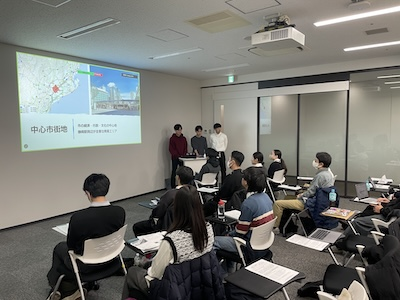

◆2024年度地理学演習（4ゼミ）・ミニエクスカーションの実施（2025.2.25)
地理学演習の活動の一環として，有志で日帰り巡検を実施しました。今年度は，卒業論文のフィールドから湯河原町を選び，卒業研究で訪れた場所を本人に案内してもらいながら散策しました。
◆2024年度地理学演習・卒業論文発表会の開催（2025.1.30）
「地理学演習・卒業論文」の成果発表の一環として，卒業論文発表会を公開で開催しました。当日は，17名の卒業論文および修士論文1名と次年度の配属ゼミ生やその他関心のある学生・卒業生を含め30名が参加し，活発な議論を行いました。
◆2024年度地域文化演習D（静岡市）・ミニ報告会の開催（2024.12.18)
「地域文化演習D」の1年間の成果発表の一環として，10月に静岡で実施した調査成果を発表するミニ報告会を学内で開催しました。お世話になった市役所の関係者の方にもオンラインでご参加頂き，講評頂きました。受講生以外の方にも公開型で実施し，全部で20名の方が参加されました。調査報告書は，冊子として作成しお世話になった方や地元の図書館等に寄贈する計画です。 
◆2024年度地理学演習（4ゼミ）・学外視察の実施（2024.5.24)
地理学演習の活動の一環として，有志で「URまちとくらしのミュージアム」を訪問し，展示解説を伺いながら視察を行いました。
◆Mapillary Meetup 2024 Tokyoの開催（2024.4.20)
研究活動の一環として，国内では4回目となる「Mapillary Meetup」を，Mapillary Contributors in Japanと共催しました。約20名の参加者と共に，事例発表や野外での体験会などを実施しました。
◆2024年度地理学演習（4ゼミ）・卒業生との交流会の実施（2024.4.19)
地理学演習の活動の一環として，2022〜2023年度に卒業された3名の卒業生をお招きして交流会を実施しました。就職活動や卒業研究の流れについて実体験に基づいた具体的な話題提供をいただきました。
◆2023年度地理学演習（4ゼミ）・ミニエクスカーションの実施（2024.3.7)
地理学演習の活動の一環として，有志で日帰り巡検を実施しました。今年度は，卒業論文のフィールドから横浜市を選び，卒業研究で訪れた場所を本人に案内してもらいながら散策しました。
◆2023年度地理学演習・卒業論文発表会の開催（2024.1.30）
「地理学演習・卒業論文」の成果発表の一環として，卒業論文発表会を公開で開催しました。当日は，15名の発表者と次年度の配属ゼミ生やその他関心のある学生・卒業生を含め34名が参加し，活発な議論を行いました。
◆2023年度地域文化調査法C（富山市）・ミニ報告会の開催（2023.12.20)
「地域文化調査法C」の1年間の成果発表の一環として，10月に富山で実施した調査成果を発表するミニ報告会を学内で開催しました。お世話になった市役所の関係者の方にもオンラインでご参加頂き，講評頂きました。受講生以外の方にも公開型で実施し，全部で25名の方が参加されました。調査報告書は，冊子として作成しお世話になった方や地元の図書館等に寄贈する計画です。
◆2022年度地理学演習・卒業論文発表会の開催（2023.2.2）
「地理学演習・卒業論文」の成果発表の一環として，卒業論文発表会を公開で開催しました。当日は，15名の発表者と次年度の配属ゼミ生やその他関心のある学生を含め35名が参加し，活発な議論を行いました。
◆2022年度地理学演習（4ゼミ）・ミニエクスカーションの実施（2023.01.25)
地理学演習の活動の一環として，有志で日帰り巡検を実施しました。今年度は，卒業論文のフィールドから小田原市を選び，卒業研究で訪れた場所を本人に案内してもらいながら散策しました。
◆2022年度地域文化演習C（会津若松市）・現地調査とミニ報告会の開催（2022.10.19-22)
「地域文化演習C」では，10月に会津若松市で現地調査を実施し，その調査成果を速報的に発表するミニ報告会を開催しました。お世話になった市役所の関係者の方にもご参加頂き，講評頂きました。
◆2021年度地理学演習・卒業論文発表会の開催（2022.1.28）
「地理学演習・卒業論文」の成果発表の一環として，瀬戸ゼミ初の卒業論文発表会を公開で開催しました。当日は，10名の発表者と次年度の配属ゼミ生やその他関心のある学生を含め30名が参加し，活発な議論を行いました。
◆2021年度地域文化調査法C（室蘭市）・現地調査とミニ報告会の開催（2022.10.20-23)
「地域文化演習C」では，10月に室蘭市で現地調査を実施し，その調査成果を速報的に発表するミニ報告会を開催しました。お世話になった市役所の関係者の方にもご参加頂き，講評頂きました。